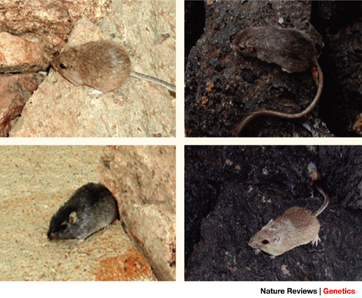

Audiência: Alunos de ensino médio.
Habilidades necessárias: Conhecimento básico de genética.
O objetivo dessa atividade é entender o que é uma mutação e que nem sempre elas podem afetar afetar os fenótipos que observamos.
Veremos o que são mutações, ao fazer a transcrição do DNA para RNA e então a tradução para aminoácidos, identificando quando as mutações afetam a cadeia final de aminoácidos ao explorar a sequência de DNA do gene Mc1r.
Uma mutação genética é uma mudança na sequência de DNA, por exemplo a sequência de um gene.
As mutações podem mudar a estrutura de uma proteína, que pode por sua vez mudar, negar ou ter nenhum efeito sobre sua função.
Mutações podem aparecer de várias formas, mas podemos classificá-las em:
Mas além das mutações se apresentarem de várias formas, seu efeito também pode variar:
Para entender um pouco melhor sobre essas mutações, vamos conhecer o Chaetodipus intermedius, um pequeno ratinho noturno que vive no deserto rochoso do sudoeste dos Estados Unidos. Como a maioria dos ratos desse tipo, ele tem uma pelagem clara, cor de areia de forma a se misturar com a paisagem clara do deserto onde vivem.
Populações de ratos de pelagem escura têm sido encontrados onde o solo é coberto por rochas de cor escura, como basalto, que vem de derramamento de lava em uma era geológica há milhares de anos. Cientistas têm coletado dados da população de ratos de pelagem escura em uma área de basalto no Arizona, assim como de uma população de ratos de pelagem clara próxima. Analisando os dados, podemos buscar mutações genéticas responsáveis pela pelagem escura e descobrir como uma mutação no gene Mc1r que está envolvido na determinação da cor da pelagem.
A cor da pelagem desses ratinhos é primariamente determinada por dois pigmentos: eumelanina (eumelanin), que é escura e feomelanina (pheomelanin), que é clara. A síntese desses pigmentos é controlada por produtos de muitos genes, incluindo o Mc1r. Esse gene codifica uma proteína chamada melanocortin 1 receptor (Mc1r). Esse receptor é encontrado incorporado na membrana dos melanócitos, que são células especializadas para a produção de pigmentos. Os melanócitos do tipo selvagem (não mutante) produzem mais feomelanina que eumalanina. O resultado é uma pelagem da cor da areia, enquanto, a versão mutante do Mc1r ativa os melanócitos a produzir mais eumelanina, resultando em uma pelagem de cor escura.
Falamos bastante de DNA, genes, populações, mas você sabia que esses dados são disponíveis abertamente para nós, podemos copiar esses dados e repetir as análises de trabalhos publicados e até mesmo testar nossas próprias hipóteses?
Vamos tentar conseguir alguns dados sobre o gene Mc1r do Chaetodipus intermedius pela página do NCBI (Centro Nacional de Informação Biotecnológica, do inglês National Center for Biotechnology Information).
Agora que já sabemos como ficam guardadas as sequências de DNA. Vamos usar a sequência de DNA nas tabelas a seguir para determinar a sequência complementar de RNA (mRNA) da sequência do gene Mc1r apresentanda. (Você só está transcrevendo uma pequena porção da sequência de DNA para essa proteína, o gene inteiro tem 951 pares de bases). É indicado se a sequência codifica uma parte da proteína extracelular, intracelular ou inserida na membrana celular.
Essa é a parte mais fácil, o DNA é formado pelas bases Adenina,Citosina,Timina e Guanina, enquanto o RNA tem Adenina, Citosina,Uracila e Guanina.
A Guanina se liga a uma Citosina e a Adenina se liga a uma Timina, mas no RNA não tem Timina, ao invés dela tem a Uracila.
Vamos ver um exemplo, um códon de DNA TTG, ficará AAC, pois a Timina do DNA vira Adenina quando transcrita para o RNA e a Guanina vira uma Citosina, já para um codon de DNA AGG, vai ficar UCC, pois Adenina vira Uracila e Guanina vira Citosina. E assim acabamos de transcrever os dois primeiros codons.
Após terminar a transcrição, use a sequência de mRNA determinada e veja qual a sequência de aminoácidos será codificada para determinar a proteína Mc1r. (Essa é apenas uma porção dos 317 aminoácidos dessa proteína).
Como traduzir o RNA para os aminoácidos que formam a proteína?
| Primeira base |
Segunda base | Terceira base base |
|||||||
|---|---|---|---|---|---|---|---|---|---|
| U | C | A | G | ||||||
| U | UUU | (Phe/F) Phenylalanine | UCU | (Ser/S) Serine | UAU | (Tyr/Y) Tyrosine | UGU | (Cys/C) Cysteine | U |
| UUC | UCC | UAC | UGC | C | |||||
| UUA | (Leu/L) Leucine | UCA | UAA | Parada | UGA | Parada | A | ||
| UUG | UCG | UAG | Parada | UGG | (Trp/W) Tryptophan | G | |||
| C | CUU | CCU | (Pro/P) Proline | CAU | (His/H) Histidine | CGU | (Arg/R) Arginine | U | |
| CUC | CCC | CAC | CGC | C | |||||
| CUA | CCA | CAA | (Gln/Q) Glutamine | CGA | A | ||||
| CUG | CCG | CAG | CGG | G | |||||
| A | AUU | (Ile/I) Isoleucine | ACU | (Thr/T) Threonine | AAU | (Asn/N) Asparagine | AGU | (Ser/S) Serine | U |
| AUC | ACC | AAC | AGC | C | |||||
| AUA | ACA | AAA | (Lys/K) Lysine | AGA | (Arg/R) Arginine | A | |||
| AUG | (Met/M) Methionine | ACG | AAG | AGG | G | ||||
| G | GUU | (Val/V) Valine | GCU | (Ala/A) Alanine | GAU | (Asp/D) Aspartic acid | GGU | (Gly/G) Glycine | U |
| GUC | GCC | GAC | GGC | C | |||||
| GUA | GCA | GAA | (Glu/E) Glutamic acid | GGA | A | ||||
| GUG | GCG | GAG | GGG | G | |||||
| DNA | TTGAGGTGGGCGTGTCCGCAAGGAGTGGAG |
| mRNA | |
| Aminoácidos |
| DNA | TTGAGGTGGACGTGTCCGCAAGGAGTGGAG |
| mRNA | |
| Aminoácidos |
| DNA | CGGGACCGGTGGGCCCACTGACACCATGTC |
| mRNA | |
| Aminoácidos |
| DNA | CGGGACCGGTGGACCCACTGACACCATGTC |
| mRNA | |
| Aminoácidos |
| DNA | TCATAACACTGTGACGGGGCCCGAGCCACC |
| mRNA | |
| Aminoácidos |
| DNA | TCATAACACTGTGACGGGACCCGAGCCACC |
| mRNA | |
| Aminoácidos |
| DNA | CACGTGTACGAACGT |
| mRNA | |
| Aminoácidos |
| DNA | CACGTGTACGAGCGT |
| mRNA | |
| Aminoácidos |
| DNA | GAACAGGTGGTTCCAAAGGCTGAGTTTCCG |
| mRNA | |
| Aminoácidos |
| DNA | GAACAGGTGGTGCCAAAGGCTGAGTTTCCG |
| mRNA | |
| Aminoácidos |
Quantas mutações você encontrou comparando as sequências Selvagens com as Mutantes?
Das mutações que você identificou no gene Mc1r, quantas são:
Das mutações que você identificou no gene Mc1r, quantas são:
Atividade retirada de: